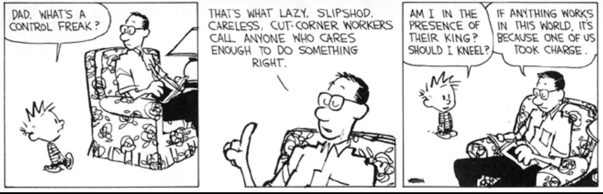

comic
- Calvin and Hobbes
- Control Freak For some reason Calvin - Calvin and Hobbes's dad always makes me think of Bryan Caplan

- Whaleocalypse
- TODO Someone should rehost these bad boys
:LOGBOOK:
CLOCK: [2023-08-13 Sun 17:41:54]--[2023-08-13 Sun 17:41:54] => 00:00:00
:END: